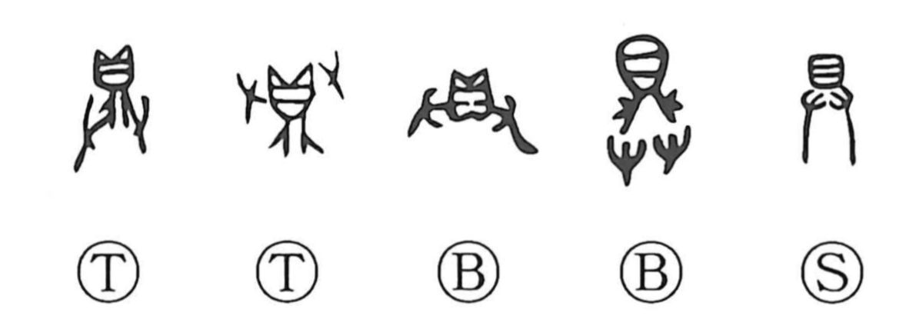

具

Kun: sonaeru, sonawaru, tsubusa | On: gu
tool ・ implement ・ utensil ・ to furnish ・ to provide ・ in detail
Explanation
具 shows 廾, two hands, lifting 鼎, a tripod vessel. The vessel occupies the upper part, which later came to resemble 貝. The hands present it with the food prepared inside.
For a ceremony, the vessels and their offerings had to be supplied in the prescribed kinds and numbers. 具 means having these things ready and complete: to provide, prepare, or be fully equipped. From completeness come ‘all together’ and ‘in full detail.’
The things supplied can themselves be called 具, giving utensils, implements, and equipment. Applied to a person, what is furnished becomes a capacity or qualification possessed by that person. The original presentation of a properly supplied vessel joins the object to the idea of readiness.